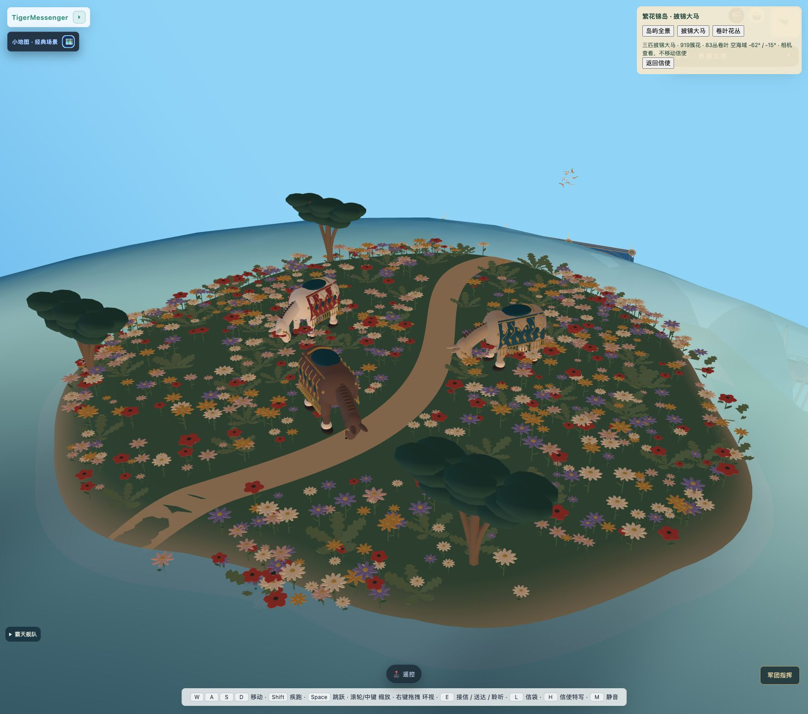
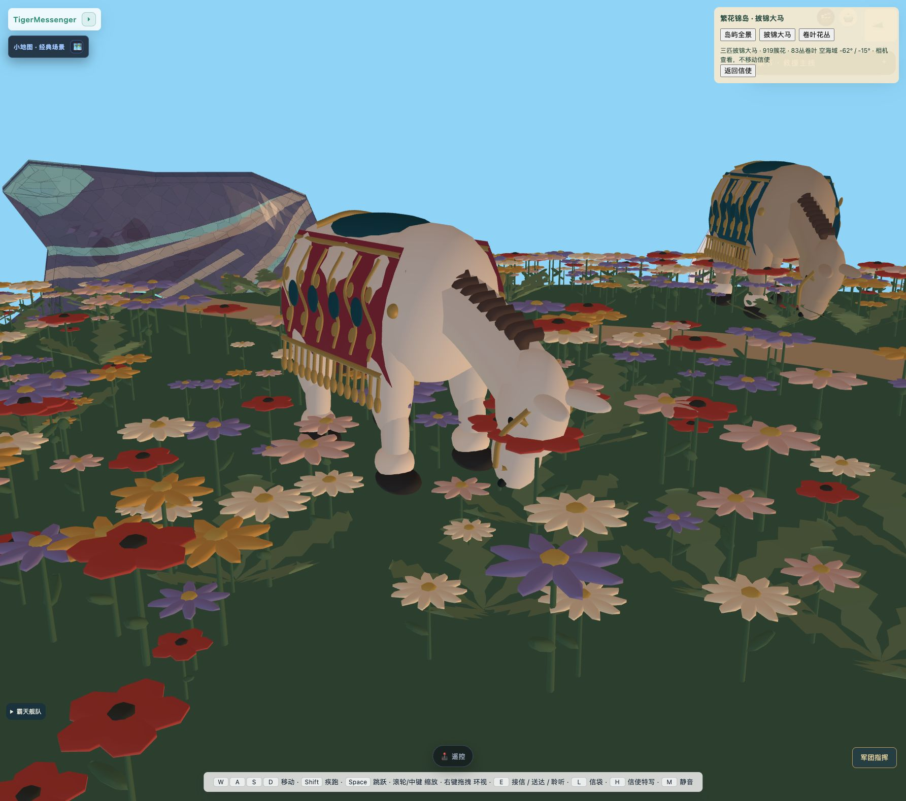
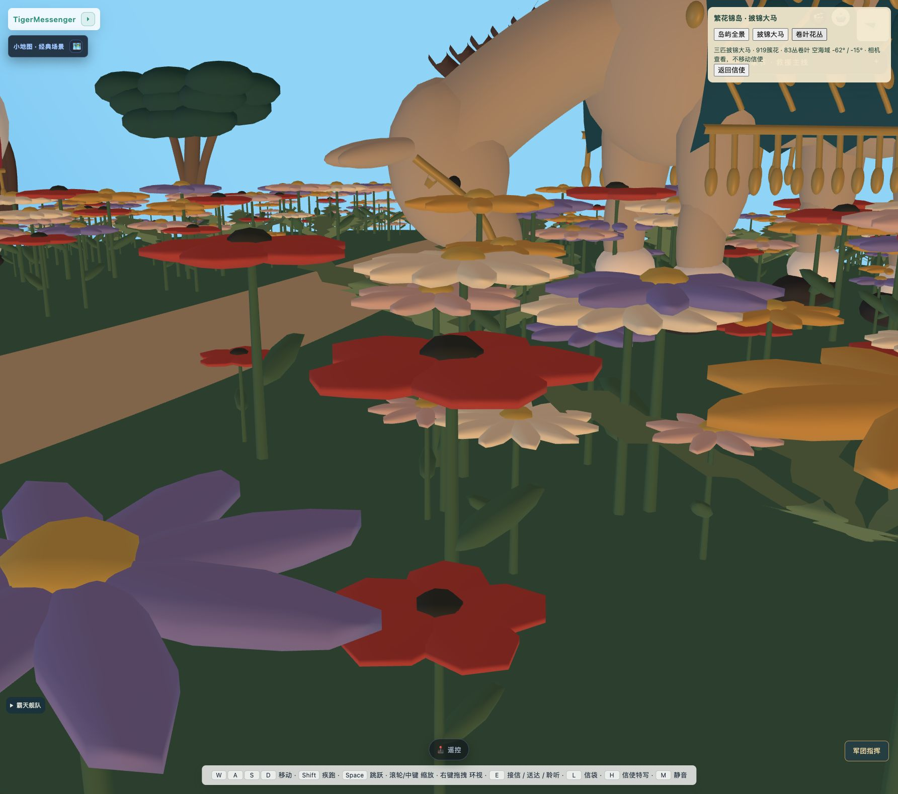

繁花锦岛 · 披锦大马
工艺美术运动 / William Morris 花叶与织物组织方式的立体转译。新增独立岛屿，原有区域保留。
进入正常游戏 → 右上角 🤖 →「繁花锦岛 · 披锦大马」。可选岛屿全景、披锦大马、卷叶花丛；「返回信使」恢复跟随相机。检查镜头不移动玩家。小地图新增真实地标「繁花锦岛」。已安装选址：南纬62° / 西经15°。741个障碍记录、2403个铁路采样点参与有限选址检查；候选中心到这些输入的最小净距约122.8米。岛体约44米宽，留2.1米宽曲径。三匹大型挽马、919簇花、83丛卷叶，红/蓝绿/褐锦缎、金色藤纹与流苏均为三维几何；马匹原地低头吃草、呼吸、摆尾。

正常游戏中的实际岛屿全景（2026-10-26 v2）。
正式马具近景：垂挂锦缎、金色藤纹、缰带与流苏。
正式花丛低机位；卷叶与花朵都是立体几何。8项几何、真实三角面支撑、十二只马蹄贴地、动画检查通过。正常场景通过原菜单打开，实际观察全景、马具与花丛，无捕获控制台错误。两轮真实JEV文字调用及最终缓存命中已保存；不作为视觉验收。
尚未完整测试乘船/飞艇抵达与步行游览；未声称性能提升。马匹目前原地吃草，没有自主漫游或马具布料物理。有限选址检查不保证所有移动舰船未来路线均远离新岛。
状态与缺项 · 8项本地检查 · 正式安装及选址报告 · 参考来源与转译 · JEV实际调用